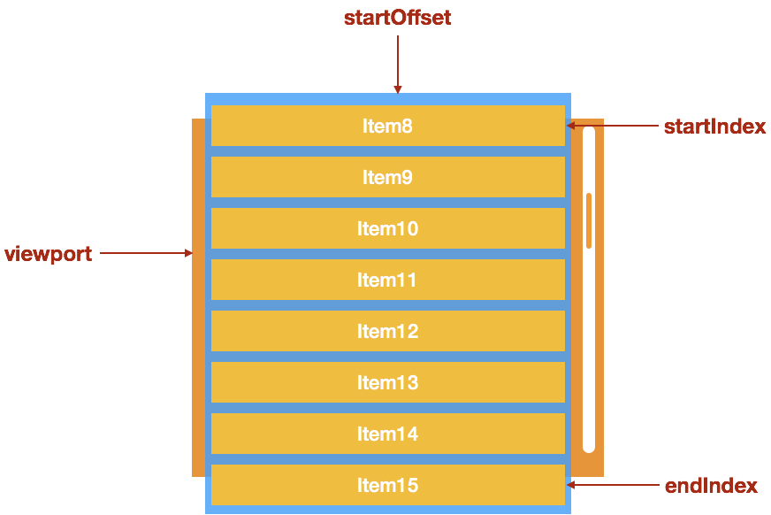

<!DOCTYPE html>
<html>
<head><meta name="generator" content="Hexo 3.9.0">
  <meta charset="utf-8">
  
  <title>面试题练习 | 前端笔记</title>
  <meta name="viewport" content="width=device-width, initial-scale=1, maximum-scale=1">
  
    <meta name="keywords" content="luhu,luhu's Blog">
  
  <meta name="description" content="长列表的优化方式：懒加载渲染 vs 可视区域渲染 懒渲染：这个就是常见的无限滚动的，每次只渲染一部分（比如 10 条），等剩余部分滚动到可见区域，就再渲染另一部分。 实现的思路非常简单：监听父元素的 scroll 事件（一般是 window），通过父元素的 scrollTop 判断是否到了页面是否到了页面底部，如果到了页面底部，就加载更多的数据。 判断滚动到底部方法：  scrollTop为滚动条">
<meta property="og:type" content="website">
<meta property="og:title" content="面试题练习">
<meta property="og:url" content="https://luhu9012.github.io/practicepage/index.html">
<meta property="og:site_name" content="前端笔记">
<meta property="og:description" content="长列表的优化方式：懒加载渲染 vs 可视区域渲染 懒渲染：这个就是常见的无限滚动的，每次只渲染一部分（比如 10 条），等剩余部分滚动到可见区域，就再渲染另一部分。 实现的思路非常简单：监听父元素的 scroll 事件（一般是 window），通过父元素的 scrollTop 判断是否到了页面是否到了页面底部，如果到了页面底部，就加载更多的数据。 判断滚动到底部方法：  scrollTop为滚动条">
<meta property="og:locale" content="default">
<meta property="og:image" content="https://luhu9012.github.io/imgs/virtrulList.png">
<meta property="og:updated_time" content="2021-04-30T07:11:02.677Z">
<meta name="twitter:card" content="summary">
<meta name="twitter:title" content="面试题练习">
<meta name="twitter:description" content="长列表的优化方式：懒加载渲染 vs 可视区域渲染 懒渲染：这个就是常见的无限滚动的，每次只渲染一部分（比如 10 条），等剩余部分滚动到可见区域，就再渲染另一部分。 实现的思路非常简单：监听父元素的 scroll 事件（一般是 window），通过父元素的 scrollTop 判断是否到了页面是否到了页面底部，如果到了页面底部，就加载更多的数据。 判断滚动到底部方法：  scrollTop为滚动条">
<meta name="twitter:image" content="https://luhu9012.github.io/imgs/virtrulList.png">
  
  
    <link rel="icon" href="/favicon.ico">
  
  <link href="//cdn.bootcss.com/font-awesome/4.7.0/css/font-awesome.min.css" rel="stylesheet" type="text/css">
  <link rel="stylesheet" href="/css/style.css">
  <script src="/js/pace.min.js"></script>
  

  
  

</head>
</html>
<body>
  <div id="container">
      <header id="header">
    <div id="banner"></div>
    <div id="header-outer">
        <div id="header-menu" class="header-menu-pos animated">
            <div class="header-menu-container">
                <a href="/" class="left">
                    <span class="site-title">luhu&#39;s Blog</span>
                </a>
                <nav id="header-menu-nav" class="right">
                    
                    <a  href="/">
                        <i class="fa fa-home"></i>
                        <span>Home</span>
                    </a>
                    
                    <a  href="/archives">
                        <i class="fa fa-archive"></i>
                        <span>Archives</span>
                    </a>
                    
                    <a  href="/about">
                        <i class="fa fa-user"></i>
                        <span>About</span>
                    </a>
                    
                </nav>
                <a class="mobile-header-menu-button">
                    <i class="fa fa-bars"></i>
                </a>
            </div>
        </div>
        <div id="header-row">
            <div id="logo">
                <a href="/">
                    
                </a>
            </div>
            <div class="header-info">
                <div id="header-title">
                    
                    <h2>
                        luhu&#39;s Blog
                    </h2>
                    
                </div>
                <div id="header-description">
                    
                    <h3>
                        一个专注 WEB 开发的技术博客
                    </h3>
                    
                </div>
            </div>
            <nav class="header-nav">
                <div class="social">
                    
                        <a title="Github" target="_blank" href="//luhu9012.github.io/">
                            <i class="fa fa-github fa-2x"></i></a>
                    
                </div>
            </nav>
        </div>
    </div>
</header>
      <div class="outer">
        <section id="main" class="body-wrap"><article id="page-" class="article article-type-page" itemscope itemprop="blogPost">
  <div class="article-inner">
    
      <header class="article-header">
        
  
    <h1 class="post-title" itemprop="name">
      面试题练习
    </h1>
    <div class="post-title-bar">
      <ul>
          
        <li>
          <i class="fa fa-calendar"></i>  2021-04-28
        </li>
        <li>
          <i class="fa fa-eye"></i>
          <span id="busuanzi_value_page_pv"></span>
        </li>
      </ul>
    </div>
  

          
      </header>
    
    <div class="article-entry " itemprop="articleBody">
      
            
            <h3 id="长列表的优化方式：懒加载渲染-vs-可视区域渲染"><a href="#长列表的优化方式：懒加载渲染-vs-可视区域渲染" class="headerlink" title="长列表的优化方式：懒加载渲染 vs 可视区域渲染"></a>长列表的优化方式：懒加载渲染 vs 可视区域渲染</h3><ol>
<li><p>懒渲染：这个就是常见的无限滚动的，每次只渲染一部分（比如 10 条），等剩余部分滚动到可见区域，就再渲染另一部分。</p>
<p>实现的思路非常简单：监听父元素的 scroll 事件（一般是 window），通过父元素的 scrollTop 判断是否到了页面是否到了页面底部，如果到了页面底部，就加载更多的数据。</p>
<p>判断滚动到底部方法：</p>
<p> scrollTop为滚动条在Y轴上的滚动距离。</p>
<p> clientHeight为内容可视区域的高度。</p>
<p> scrollHeight为内容可视区域的高度加上溢出（滚动）的距离。</p>
<p> 滚动条到底部的条件即为scrollTop + clientHeight == scrollHeight。</p>
</li>
</ol>
<ol start="2">
<li><p>可视区域渲染：只渲染可见部分，不可见部分不渲染。</p>
<p> 可视区域渲染适合下面这种场景：</p>
<ul>
<li><p>每个数据的展现形式的高度需要一致（非必须，但是最小高度需要确定）。</p>
</li>
<li><p>产品设计上，一次需要加载的数据量比较大「1000条以上」。</p>
</li>
<li><p>产品设计上，滚动条需要挂载在一个固定高度的区域（在 window 上也可以，但是需要整个区域都只显示这个列表）。</p>
<p>可视区域渲染的两个概念：</p>
</li>
<li><p>可滚动区域：假设有 1000 条数据，每个列表项的高度是 30，那么可滚动的区域的高度就是 1000 * 30。当用户改变列表的滚动条的当前滚动值的时候，会造成可见区域的内容的变更。</p>
</li>
<li><p>可见区域：比如列表的高度是 300，右侧有纵向滚动条可以滚动，那么视觉可见的区域就是可见区域。</p>
<p>实现虚拟列表就是处理滚动条滚动后的可见区域的变更，其中具体步骤如下：</p>
</li>
</ul>
<ol>
<li><p>计算当前可见区域起始数据的 startIndex</p>
</li>
<li><p>计算当前可见区域结束数据的 endIndex</p>
</li>
<li><p>计算当前可见区域的数据，并渲染到页面中</p>
</li>
<li><p>计算 startIndex 对应的数据在整个列表中的偏移位置 startOffset，并设置到列表上</p>
<p></p>
<p><a href="https://cloud.tencent.com/developer/article/1533206" target="_blank" rel="noopener">高性能渲染十万条数据(虚拟列表)</a><br><a href="https://mp.weixin.qq.com/s?__biz=MzU3Nzk3NDk5OQ==&mid=2247483815&idx=1&sn=8b52305534cae600abf27e041d1ad463&chksm=fd7d261fca0aaf09246d8ea0e06577e1bc380797d4813628594e3cfb8bcb9173cf7ea7a8fe93&token=1876016006&lang=zh_CN&scene=21#wechat_redirect" target="_blank" rel="noopener">「前端进阶」高性能渲染十万条数据(时间分片)</a></p>
</li>
</ol>
</li>
</ol>
<h3 id="完成题目"><a href="#完成题目" class="headerlink" title="完成题目"></a>完成题目</h3><p>/*<br>  a)在不使用vue、react的前提下写代码解决一下问题<br>    一个List页面上，含有1000个条目的待办列表，现其中100项在同一时间达到了过期时间，需要在对应项的text-node里添加“已过期”文字。需要尽可能减少dom重绘次数以提升性能。<br>  b)尝试使用vue或react解决上述问题<br>*/</p>
<p>  1、 虚拟长列表，可视窗口，渲染窗口，startindex endIndex scrollOffset<br>  2、在内存中操作domcumentFragment，document.createDocumentFragment()  完成后一并插入parentNode、<br>  3、dom复用 child = node.removeChild(child)  node.appendChild(child)<br>  4、 时间分片,分批次插入 settimeout requestAnimattion</p>
<figure class="highlight plain"><table><tr><td class="gutter"><pre><span class="line">1</span><br><span class="line">2</span><br><span class="line">3</span><br><span class="line">4</span><br><span class="line">5</span><br><span class="line">6</span><br><span class="line">7</span><br><span class="line">8</span><br><span class="line">9</span><br><span class="line">10</span><br><span class="line">11</span><br><span class="line">12</span><br><span class="line">13</span><br><span class="line">14</span><br><span class="line">15</span><br><span class="line">16</span><br><span class="line">17</span><br><span class="line">18</span><br><span class="line">19</span><br><span class="line">20</span><br><span class="line">21</span><br><span class="line">22</span><br><span class="line">23</span><br><span class="line">24</span><br><span class="line">25</span><br><span class="line">26</span><br><span class="line">27</span><br><span class="line">28</span><br><span class="line">29</span><br><span class="line">30</span><br><span class="line">31</span><br><span class="line">32</span><br><span class="line">33</span><br><span class="line">34</span><br><span class="line">35</span><br><span class="line">36</span><br><span class="line">37</span><br><span class="line">38</span><br><span class="line">39</span><br><span class="line">40</span><br><span class="line">41</span><br><span class="line">42</span><br><span class="line">43</span><br><span class="line">44</span><br><span class="line">45</span><br><span class="line">46</span><br><span class="line">47</span><br><span class="line">48</span><br><span class="line">49</span><br><span class="line">50</span><br><span class="line">51</span><br><span class="line">52</span><br><span class="line">53</span><br><span class="line">54</span><br><span class="line">55</span><br><span class="line">56</span><br><span class="line">57</span><br><span class="line">58</span><br><span class="line">59</span><br><span class="line">60</span><br><span class="line">61</span><br><span class="line">62</span><br><span class="line">63</span><br><span class="line">64</span><br><span class="line">65</span><br><span class="line">66</span><br><span class="line">67</span><br><span class="line">68</span><br><span class="line">69</span><br><span class="line">70</span><br><span class="line">71</span><br><span class="line">72</span><br><span class="line">73</span><br><span class="line">74</span><br><span class="line">75</span><br><span class="line">76</span><br><span class="line">77</span><br><span class="line">78</span><br><span class="line">79</span><br><span class="line">80</span><br><span class="line">81</span><br><span class="line">82</span><br><span class="line">83</span><br><span class="line">84</span><br><span class="line">85</span><br><span class="line">86</span><br><span class="line">87</span><br><span class="line">88</span><br><span class="line">89</span><br><span class="line">90</span><br><span class="line">91</span><br><span class="line">92</span><br><span class="line">93</span><br><span class="line">94</span><br><span class="line">95</span><br><span class="line">96</span><br><span class="line">97</span><br><span class="line">98</span><br><span class="line">99</span><br><span class="line">100</span><br><span class="line">101</span><br><span class="line">102</span><br><span class="line">103</span><br><span class="line">104</span><br><span class="line">105</span><br><span class="line">106</span><br><span class="line">107</span><br><span class="line">108</span><br><span class="line">109</span><br><span class="line">110</span><br><span class="line">111</span><br><span class="line">112</span><br><span class="line">113</span><br><span class="line">114</span><br><span class="line">115</span><br><span class="line">116</span><br><span class="line">117</span><br><span class="line">118</span><br><span class="line">119</span><br><span class="line">120</span><br><span class="line">121</span><br><span class="line">122</span><br><span class="line">123</span><br><span class="line">124</span><br><span class="line">125</span><br><span class="line">126</span><br><span class="line">127</span><br><span class="line">128</span><br><span class="line">129</span><br><span class="line">130</span><br><span class="line">131</span><br><span class="line">132</span><br><span class="line">133</span><br><span class="line">134</span><br><span class="line">135</span><br><span class="line">136</span><br><span class="line">137</span><br><span class="line">138</span><br><span class="line">139</span><br><span class="line">140</span><br><span class="line">141</span><br><span class="line">142</span><br><span class="line">143</span><br><span class="line">144</span><br><span class="line">145</span><br><span class="line">146</span><br><span class="line">147</span><br><span class="line">148</span><br><span class="line">149</span><br><span class="line">150</span><br><span class="line">151</span><br><span class="line">152</span><br><span class="line">153</span><br><span class="line">154</span><br><span class="line">155</span><br><span class="line">156</span><br><span class="line">157</span><br><span class="line">158</span><br><span class="line">159</span><br><span class="line">160</span><br><span class="line">161</span><br><span class="line">162</span><br><span class="line">163</span><br><span class="line">164</span><br><span class="line">165</span><br><span class="line">166</span><br><span class="line">167</span><br><span class="line">168</span><br><span class="line">169</span><br><span class="line">170</span><br><span class="line">171</span><br><span class="line">172</span><br><span class="line">173</span><br><span class="line">174</span><br><span class="line">175</span><br><span class="line">176</span><br><span class="line">177</span><br><span class="line">178</span><br><span class="line">179</span><br><span class="line">180</span><br><span class="line">181</span><br><span class="line">182</span><br><span class="line">183</span><br><span class="line">184</span><br><span class="line">185</span><br><span class="line">186</span><br><span class="line">187</span><br><span class="line">188</span><br><span class="line">189</span><br><span class="line">190</span><br><span class="line">191</span><br><span class="line">192</span><br><span class="line">193</span><br><span class="line">194</span><br><span class="line">195</span><br><span class="line">196</span><br><span class="line">197</span><br><span class="line">198</span><br><span class="line">199</span><br><span class="line">200</span><br><span class="line">201</span><br><span class="line">202</span><br><span class="line">203</span><br><span class="line">204</span><br><span class="line">205</span><br><span class="line">206</span><br><span class="line">207</span><br><span class="line">208</span><br><span class="line">209</span><br><span class="line">210</span><br><span class="line">211</span><br><span class="line">212</span><br></pre></td><td class="code"><pre><span class="line">// vue virtualList</span><br><span class="line">&lt;template&gt;</span><br><span class="line">  &lt;div ref=&quot;list&quot; :style=&quot;&#123;height&#125;&quot; class=&quot;infinite-list-container&quot; @scroll=&quot;scrollEvent($event)&quot;&gt;</span><br><span class="line">    &lt;div ref=&quot;phantom&quot; class=&quot;infinite-list-phantom&quot;&gt;&lt;/div&gt;</span><br><span class="line">    &lt;div ref=&quot;content&quot; class=&quot;infinite-list&quot;&gt;</span><br><span class="line">      &lt;div class=&quot;infinite-list-item&quot; ref=&quot;items&quot; :id=&quot;item._index&quot; :key=&quot;item._index&quot; v-for=&quot;item in visibleData&quot;&gt;</span><br><span class="line">        &lt;slot ref=&quot;slot&quot; :item=&quot;item.item&quot;&gt;&lt;/slot&gt;</span><br><span class="line">      &lt;/div&gt;</span><br><span class="line">    &lt;/div&gt;</span><br><span class="line">  &lt;/div&gt;</span><br><span class="line">&lt;/template&gt;</span><br><span class="line"></span><br><span class="line"></span><br><span class="line">&lt;script&gt;</span><br><span class="line"></span><br><span class="line">export default &#123;</span><br><span class="line">  name:&apos;VirtualList&apos;,</span><br><span class="line">  props: &#123;</span><br><span class="line">    //所有列表数据</span><br><span class="line">    listData:&#123;</span><br><span class="line">      type:Array,</span><br><span class="line">      default:()=&gt;[]</span><br><span class="line">    &#125;,</span><br><span class="line">    //预估高度</span><br><span class="line">    estimatedItemSize:&#123;</span><br><span class="line">      type:Number,</span><br><span class="line">      required: true</span><br><span class="line">    &#125;,</span><br><span class="line">    //缓冲区比例</span><br><span class="line">    bufferScale:&#123;</span><br><span class="line">      type:Number, </span><br><span class="line">      default:1</span><br><span class="line">    &#125;,</span><br><span class="line">    //容器高度 100px or 50vh</span><br><span class="line">    height:&#123;</span><br><span class="line">      type:String,</span><br><span class="line">      default:&apos;100%&apos;</span><br><span class="line">    &#125;</span><br><span class="line">  &#125;,</span><br><span class="line">  computed:&#123;</span><br><span class="line">    _listData()&#123;</span><br><span class="line">      return this.listData.map((item,index)=&gt;&#123;</span><br><span class="line">        return &#123;</span><br><span class="line">          _index:`_$&#123;index&#125;`,</span><br><span class="line">          item</span><br><span class="line">        &#125;</span><br><span class="line">      &#125;)</span><br><span class="line">    &#125;,</span><br><span class="line">    visibleCount()&#123;</span><br><span class="line">      return Math.ceil(this.screenHeight / this.estimatedItemSize);</span><br><span class="line">    &#125;,</span><br><span class="line">    aboveCount()&#123;</span><br><span class="line">      return Math.min(this.start,this.bufferScale * this.visibleCount)</span><br><span class="line">    &#125;,</span><br><span class="line">    belowCount()&#123;</span><br><span class="line">      return Math.min(this.listData.length - this.end,this.bufferScale * this.visibleCount);</span><br><span class="line">    &#125;,</span><br><span class="line">    visibleData()&#123;</span><br><span class="line">      let start = this.start - this.aboveCount;</span><br><span class="line">      let end = this.end + this.belowCount;</span><br><span class="line">      return this._listData.slice(start, end);</span><br><span class="line">    &#125;</span><br><span class="line">  &#125;,</span><br><span class="line">  created()&#123;</span><br><span class="line">    this.initPositions();</span><br><span class="line">    window.vm = this;</span><br><span class="line">  &#125;,</span><br><span class="line">  mounted() &#123;</span><br><span class="line">    this.screenHeight = this.$el.clientHeight;</span><br><span class="line">    this.start = 0;</span><br><span class="line">    this.end = this.start + this.visibleCount;</span><br><span class="line">  &#125;,</span><br><span class="line">  updated()&#123;</span><br><span class="line">    this.$nextTick(function () &#123;</span><br><span class="line">      if(!this.$refs.items || !this.$refs.items.length)&#123;</span><br><span class="line">        return ;</span><br><span class="line">      &#125;</span><br><span class="line">      //获取真实元素大小，修改对应的尺寸缓存</span><br><span class="line">      this.updateItemsSize(); </span><br><span class="line">      //更新列表总高度</span><br><span class="line">      let height = this.positions[this.positions.length - 1].bottom;</span><br><span class="line">      this.$refs.phantom.style.height = height + &apos;px&apos;</span><br><span class="line">      //更新真实偏移量</span><br><span class="line">      this.setStartOffset();</span><br><span class="line">    &#125;)</span><br><span class="line">  &#125;,</span><br><span class="line">  data() &#123;</span><br><span class="line">    return &#123;</span><br><span class="line">      //可视区域高度</span><br><span class="line">      screenHeight:0,</span><br><span class="line">      //起始索引</span><br><span class="line">      start:0,</span><br><span class="line">      //结束索引</span><br><span class="line">      end:0,</span><br><span class="line">    &#125;;</span><br><span class="line">  &#125;,</span><br><span class="line">  methods: &#123;</span><br><span class="line">    initPositions()&#123;</span><br><span class="line">      this.positions = this.listData.map((d,index)=&gt;(&#123;</span><br><span class="line">          index,</span><br><span class="line">          height:this.estimatedItemSize,</span><br><span class="line">          top:index * this.estimatedItemSize,</span><br><span class="line">          bottom:(index+1) * this.estimatedItemSize</span><br><span class="line">        &#125;)</span><br><span class="line">      );</span><br><span class="line">    &#125;,</span><br><span class="line">    //获取列表起始索引</span><br><span class="line">    getStartIndex(scrollTop = 0)&#123;</span><br><span class="line">      //二分法查找</span><br><span class="line">      return this.binarySearch(this.positions,scrollTop)</span><br><span class="line">    &#125;,</span><br><span class="line">    binarySearch(list,value)&#123;</span><br><span class="line">      let start = 0;</span><br><span class="line">      let end = list.length - 1;</span><br><span class="line">      let tempIndex = null;</span><br><span class="line"></span><br><span class="line">      while(start &lt;= end)&#123;</span><br><span class="line">        let midIndex = parseInt((start + end)/2);</span><br><span class="line">        let midValue = list[midIndex].bottom;</span><br><span class="line">        if(midValue === value)&#123;</span><br><span class="line">          return midIndex + 1;</span><br><span class="line">        &#125;else if(midValue &lt; value)&#123;</span><br><span class="line">          start = midIndex + 1;</span><br><span class="line">        &#125;else if(midValue &gt; value)&#123;</span><br><span class="line">          if(tempIndex === null || tempIndex &gt; midIndex)&#123;</span><br><span class="line">            tempIndex = midIndex;</span><br><span class="line">          &#125;</span><br><span class="line">          end = end - 1;</span><br><span class="line">        &#125;</span><br><span class="line">      &#125;</span><br><span class="line">      return tempIndex;</span><br><span class="line">    &#125;,</span><br><span class="line">    //获取列表项的当前尺寸</span><br><span class="line">    updateItemsSize()&#123;</span><br><span class="line">      let nodes = this.$refs.items;</span><br><span class="line">      nodes.forEach((node)=&gt;&#123;</span><br><span class="line">        let rect = node.getBoundingClientRect();</span><br><span class="line">        let height = rect.height;</span><br><span class="line">        let index = +node.id.slice(1)</span><br><span class="line">        let oldHeight = this.positions[index].height;</span><br><span class="line">        let dValue = oldHeight - height;</span><br><span class="line">        //存在差值</span><br><span class="line">        if(dValue)&#123;</span><br><span class="line">          this.positions[index].bottom = this.positions[index].bottom - dValue;</span><br><span class="line">          this.positions[index].height = height;</span><br><span class="line">          for(let k = index + 1;k&lt;this.positions.length; k++)&#123;</span><br><span class="line">            this.positions[k].top = this.positions[k-1].bottom;</span><br><span class="line">            this.positions[k].bottom = this.positions[k].bottom - dValue;</span><br><span class="line">          &#125;</span><br><span class="line">        &#125;</span><br><span class="line">        </span><br><span class="line">      &#125;)</span><br><span class="line">    &#125;,</span><br><span class="line">    //获取当前的偏移量</span><br><span class="line">    setStartOffset()&#123;</span><br><span class="line">      let startOffset;</span><br><span class="line">      if(this.start &gt;= 1)&#123;</span><br><span class="line">        let size = this.positions[this.start].top - (this.positions[this.start - this.aboveCount] ? this.positions[this.start - this.aboveCount].top : 0);</span><br><span class="line">        startOffset = this.positions[this.start - 1].bottom - size;</span><br><span class="line">      &#125;else&#123;</span><br><span class="line">        startOffset = 0;</span><br><span class="line">      &#125;</span><br><span class="line">      this.$refs.content.style.transform = `translate3d(0,$&#123;startOffset&#125;px,0)`</span><br><span class="line">    &#125;,</span><br><span class="line">    //滚动事件</span><br><span class="line">    scrollEvent() &#123;</span><br><span class="line">      //当前滚动位置</span><br><span class="line">      let scrollTop = this.$refs.list.scrollTop;</span><br><span class="line">      // let startBottom = this.positions[this.start - ]</span><br><span class="line">      //此时的开始索引</span><br><span class="line">      this.start = this.getStartIndex(scrollTop);</span><br><span class="line">      //此时的结束索引</span><br><span class="line">      this.end = this.start + this.visibleCount;</span><br><span class="line">      //此时的偏移量</span><br><span class="line">      this.setStartOffset();</span><br><span class="line">    &#125;</span><br><span class="line">  &#125;</span><br><span class="line">&#125;;</span><br><span class="line">&lt;/script&gt;</span><br><span class="line"></span><br><span class="line"></span><br><span class="line">&lt;style scoped&gt;</span><br><span class="line">.infinite-list-container &#123;</span><br><span class="line">  overflow: auto;</span><br><span class="line">  position: relative;</span><br><span class="line">  -webkit-overflow-scrolling: touch;</span><br><span class="line">&#125;</span><br><span class="line"></span><br><span class="line">.infinite-list-phantom &#123;</span><br><span class="line">  position: absolute;</span><br><span class="line">  left: 0;</span><br><span class="line">  top: 0;</span><br><span class="line">  right: 0;</span><br><span class="line">  z-index: -1;</span><br><span class="line">&#125;</span><br><span class="line"></span><br><span class="line">.infinite-list &#123;</span><br><span class="line">  left: 0;</span><br><span class="line">  right: 0;</span><br><span class="line">  top: 0;</span><br><span class="line">  position: absolute;</span><br><span class="line">&#125;</span><br><span class="line"></span><br><span class="line">.infinite-list-item &#123;</span><br><span class="line">  padding: 5px;</span><br><span class="line">  color: #555;</span><br><span class="line">  box-sizing: border-box;</span><br><span class="line">  border-bottom: 1px solid #999;</span><br><span class="line">  /* height:200px; */</span><br><span class="line">&#125;</span><br><span class="line"></span><br><span class="line">&lt;/style&gt;</span><br></pre></td></tr></table></figure>

<p>面向未来<br>在前文中我们使用 监听scroll事件的方式来触发可视区域中数据的更新，当滚动发生后，scroll事件会频繁触发，很多时候会造成 重复计算的问题，从性能上来说无疑存在浪费的情况。</p>
<p>可以使用IntersectionObserver替换监听scroll事件， IntersectionObserver可以监听目标元素是否出现在可视区域内，在监听的回调事件中执行可视区域数据的更新，并且 IntersectionObserver的监听回调是异步触发，不随着目标元素的滚动而触发，性能消耗极低。</p>
<p>遗留问题<br>我们虽然实现了根据列表项动态高度下的虚拟列表，但如果列表项中包含图片，并且列表高度由图片撑开，由于图片会发送网络请求，此时无法保证我们在获取列表项真实高度时图片是否已经加载完成，从而造成计算不准确的情况。</p>
<p>这种情况下，如果我们能监听列表项的大小变化就能获取其真正的高度了。我们可以使用ResizeObserver来监听列表项内容区域的高度改变，从而实时获取每一列表项的高度。</p>
<p>不过遗憾的是，仅有少数浏览器支持 ResizeObserver。</p>

            <div class="post-copyright">
    <div class="content">
        <p>最后更新： 2021年04月30日 15:11</p>
        <p>原始链接： <a class="post-url" href="/practicepage/index.html" title="面试题练习">https://luhu9012.github.io/practicepage/index.html</a></p>
        <footer>
            <a href="https://luhu9012.github.io">
                
                luhu9012
            </a>
        </footer>
    </div>
</div>

      
        
            

        
    </div>
    <footer class="article-footer">
        
        
<div class="post-share">
    <a href="javascript:;" id="share-sub" class="post-share-fab">
        <i class="fa fa-share-alt"></i>
    </a>
    <div class="post-share-list" id="share-list">
        <ul class="share-icons">
          <li>
            <a class="weibo share-sns" target="_blank" href="http://service.weibo.com/share/share.php?url=https://luhu9012.github.io/practicepage/&title=《面试题练习》 — 前端笔记&pic=https://luhu9012.github.ioimages/logo.png" data-title="微博">
              <i class="fa fa-weibo"></i>
            </a>
          </li>
          <li>
            <a class="weixin share-sns" id="wxFab" href="javascript:;" data-title="微信">
              <i class="fa fa-weixin"></i>
            </a>
          </li>
          <li>
            <a class="qq share-sns" target="_blank" href="http://connect.qq.com/widget/shareqq/index.html?url=https://luhu9012.github.io/practicepage/&title=《面试题练习》 — 前端笔记&source=" data-title="QQ">
              <i class="fa fa-qq"></i>
            </a>
          </li>
          <li>
            <a class="facebook share-sns" target="_blank" href="https://www.facebook.com/sharer/sharer.php?u=https://luhu9012.github.io/practicepage/" data-title="Facebook">
              <i class="fa fa-facebook"></i>
            </a>
          </li>
          <li>
            <a class="twitter share-sns" target="_blank" href="https://twitter.com/intent/tweet?text=《面试题练习》 — 前端笔记&url=https://luhu9012.github.io/practicepage/&via=https://luhu9012.github.io" data-title="Twitter">
              <i class="fa fa-twitter"></i>
            </a>
          </li>
          <li>
            <a class="google share-sns" target="_blank" href="https://plus.google.com/share?url=https://luhu9012.github.io/practicepage/" data-title="Google+">
              <i class="fa fa-google-plus"></i>
            </a>
          </li>
        </ul>
     </div>
</div>
<div class="post-modal wx-share" id="wxShare">
    <a class="close" href="javascript:;" id="wxShare-close">×</a>
    <p>扫一扫，分享到微信</p>
    
</div>

<div class="mask"></div>

        
        <ul class="article-footer-menu">
            
            
        </ul>
        
    </footer>
  </div>
</article>


    <aside class="post-toc-pos post-toc-top" id="post-toc">
        <nav class="post-toc-wrap">
            <ol class="post-toc"><li class="post-toc-item post-toc-level-3"><a class="post-toc-link" href="#长列表的优化方式：懒加载渲染-vs-可视区域渲染"><span class="post-toc-text">长列表的优化方式：懒加载渲染 vs 可视区域渲染</span></a></li><li class="post-toc-item post-toc-level-3"><a class="post-toc-link" href="#完成题目"><span class="post-toc-text">完成题目</span></a></li></ol>
        </nav>
    </aside>
    


    
</section>
        
      </div>
      <footer id="footer">
  <div class="outer">
    <div id="footer-info" class="inner">
      
<p>
    <span id="busuanzi_container_site_uv" style='display:none'>
        总访客数：<span id="busuanzi_value_site_uv"></span>
    </span>
    <span id="busuanzi_container_site_pv" style='display:none'>
        总访问量：<span id="busuanzi_value_site_pv"></span>
    </span>
</p>


      <p>
        Powered by  <a href="http://hexo.io/" target="_blank">Hexo</a>
        Theme <a href="//github.com/wongminho/hexo-theme-miho" target="_blank">MiHo</a>
      &copy; 2021 luhu9012<br>
      </p>
    </div>
  </div>
</footer>
    <script async src="//busuanzi.ibruce.info/busuanzi/2.3/busuanzi.pure.mini.js"></script>
<script src="//cdn.bootcss.com/jquery/3.2.1/jquery.min.js"></script>
<script>
  var mihoConfig = {
      root: "https://luhu9012.github.io",
      animate: true,
      isHome: false,
      share: true,
      reward: 0
  }
</script>
<div class="sidebar">
    <div id="sidebar-search" title="Search">
        <i class="fa fa-search"></i>
    </div>
    <div id="sidebar-category" title="Categories">
        <i class="fa fa-book"></i>
    </div>
    <div id="sidebar-tag" title="Tags">
        <i class="fa fa-tags"></i>
    </div>
    <div id="sidebar-top">
        <span class="sidebar-top-icon"><i class="fa fa-angle-up"></i></span>
    </div>
</div>
<div class="sidebar-menu-box" id="sidebar-menu-box">
    <div class="sidebar-menu-box-container">
        <div id="sidebar-menu-box-categories">
            <a class="category-link" href="/categories/bom/">bom</a><a class="category-link" href="/categories/css/">css</a><a class="category-link" href="/categories/js实践/">js实践</a><a class="category-link" href="/categories/js异步编程/">js异步编程</a><a class="category-link" href="/categories/动画/">动画</a><a class="category-link" href="/categories/框架/">框架</a><a class="category-link" href="/categories/设计模式/">设计模式</a><a class="category-link" href="/categories/项目/">项目</a>
        </div>
        <div id="sidebar-menu-box-tags">
            <a href="/tags/async-异步/" style="font-size: 10px;">async 异步</a> <a href="/tags/bfc/" style="font-size: 10px;">bfc</a> <a href="/tags/bind-new-instanceof-call-applay-继承-decorator-nextTick/" style="font-size: 10px;">bind new instanceof call applay 继承 decorator  nextTick</a> <a href="/tags/canvas/" style="font-size: 10px;">canvas</a> <a href="/tags/css/" style="font-size: 10px;">css</a> <a href="/tags/css-概念/" style="font-size: 10px;">css 概念</a> <a href="/tags/css动画-js动画/" style="font-size: 10px;">css动画 js动画</a> <a href="/tags/es6-语法/" style="font-size: 10px;">es6 语法</a> <a href="/tags/javaSciript/" style="font-size: 20px;">javaSciript</a> <a href="/tags/js-机制/" style="font-size: 10px;">js 机制</a> <a href="/tags/js基础-js运行机制/" style="font-size: 10px;">js基础 js运行机制</a> <a href="/tags/oop/" style="font-size: 10px;">oop</a> <a href="/tags/vue-js/" style="font-size: 10px;">vue.js</a> <a href="/tags/垂直居中/" style="font-size: 10px;">垂直居中</a> <a href="/tags/奇技淫巧/" style="font-size: 10px;">奇技淫巧</a> <a href="/tags/性能/" style="font-size: 10px;">性能</a> <a href="/tags/文件上传/" style="font-size: 20px;">文件上传</a> <a href="/tags/树/" style="font-size: 10px;">树</a> <a href="/tags/浏览器-V8/" style="font-size: 10px;">浏览器  V8</a> <a href="/tags/跨域/" style="font-size: 10px;">跨域</a> <a href="/tags/防抖-节流-柯里化-pip-compose-js缓存算法-数组与树形结构互转-图片并发下载/" style="font-size: 10px;">防抖 节流 柯里化 pip compose js缓存算法 数组与树形结构互转 图片并发下载</a> <a href="/tags/项目/" style="font-size: 20px;">项目</a>
        </div>
    </div>
    <a href="javascript:;" class="sidebar-menu-box-close">&times;</a>
</div>
<div class="mobile-header-menu-nav" id="mobile-header-menu-nav">
    <div class="mobile-header-menu-container">
        <span class="title">Menus</span>
        <ul class="mobile-header-menu-navbar">
            
            <li>
                <a  href="/">
                    <i class="fa fa-home"></i><span>Home</span>
                </a>
            </li>
            
            <li>
                <a  href="/archives">
                    <i class="fa fa-archive"></i><span>Archives</span>
                </a>
            </li>
            
            <li>
                <a  href="/about">
                    <i class="fa fa-user"></i><span>About</span>
                </a>
            </li>
            
        </ul>
    </div>
    <div class="mobile-header-tag-container">
        <span class="title">Tags</span>
        <div id="mobile-header-container-tags">
            <a href="/tags/async-异步/" style="font-size: 10px;">async 异步</a> <a href="/tags/bfc/" style="font-size: 10px;">bfc</a> <a href="/tags/bind-new-instanceof-call-applay-继承-decorator-nextTick/" style="font-size: 10px;">bind new instanceof call applay 继承 decorator  nextTick</a> <a href="/tags/canvas/" style="font-size: 10px;">canvas</a> <a href="/tags/css/" style="font-size: 10px;">css</a> <a href="/tags/css-概念/" style="font-size: 10px;">css 概念</a> <a href="/tags/css动画-js动画/" style="font-size: 10px;">css动画 js动画</a> <a href="/tags/es6-语法/" style="font-size: 10px;">es6 语法</a> <a href="/tags/javaSciript/" style="font-size: 20px;">javaSciript</a> <a href="/tags/js-机制/" style="font-size: 10px;">js 机制</a> <a href="/tags/js基础-js运行机制/" style="font-size: 10px;">js基础 js运行机制</a> <a href="/tags/oop/" style="font-size: 10px;">oop</a> <a href="/tags/vue-js/" style="font-size: 10px;">vue.js</a> <a href="/tags/垂直居中/" style="font-size: 10px;">垂直居中</a> <a href="/tags/奇技淫巧/" style="font-size: 10px;">奇技淫巧</a> <a href="/tags/性能/" style="font-size: 10px;">性能</a> <a href="/tags/文件上传/" style="font-size: 20px;">文件上传</a> <a href="/tags/树/" style="font-size: 10px;">树</a> <a href="/tags/浏览器-V8/" style="font-size: 10px;">浏览器  V8</a> <a href="/tags/跨域/" style="font-size: 10px;">跨域</a> <a href="/tags/防抖-节流-柯里化-pip-compose-js缓存算法-数组与树形结构互转-图片并发下载/" style="font-size: 10px;">防抖 节流 柯里化 pip compose js缓存算法 数组与树形结构互转 图片并发下载</a> <a href="/tags/项目/" style="font-size: 20px;">项目</a>
        </div>
    </div>
</div>
<div class="search-wrap">
    <span class="search-close">&times;</span>
        <a href="javascript:;" class="header-icon waves-effect waves-circle waves-light" id="back">
            <i class="icon icon-lg icon-chevron-left"></i>
        </a>
        <input class="search-field" placeholder="Search..." id="keywords">
        <a id="search-submit" href="javascript:;">
            <i class="fa fa-search"></i>
        </a>
    <div class="search-container" id="search-container">
        <ul class="search-result" id="search-result">
        </ul>
    </div>
</div>

<div id="search-tpl">
    <li class="search-result-item">
        <a href="{url}" class="search-item-li">
            <span class="search-item-li-title" title="{title}">{title}</span>
        </a>
    </li>
</div>
<script src="/js/search.js"></script>
<script src="/js/main.js"></script>


  <script src="//cdn.bootcss.com/particles.js/2.0.0/particles.min.js"></script>
  <div id="particles"></div>
  <script src="/js/particles.js"></script>


  <link rel="stylesheet" href="//cdn.bootcss.com/animate.css/3.5.0/animate.min.css">
  <script src="//cdn.bootcss.com/scrollReveal.js/3.0.5/scrollreveal.js"></script>
  <script src="/js/animate.js"></script>


  <script src="/js/pop-img.js"></script>
  <script>
     $(".article-entry p img").popImg();
  </script>

  </div>
</body>
</html>